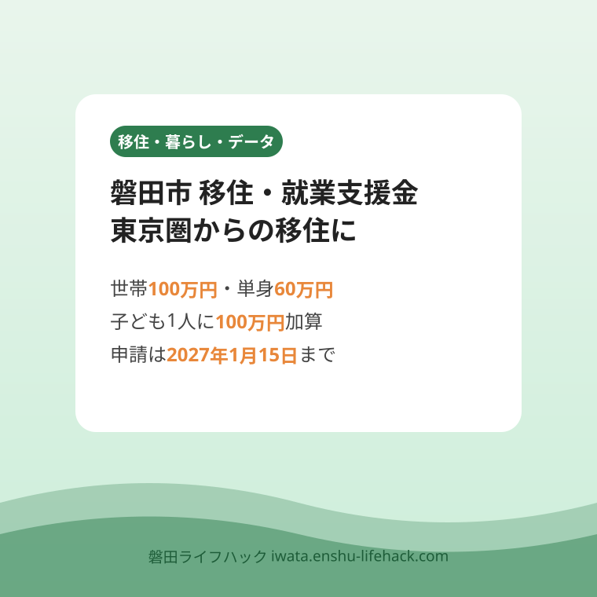

移住・暮らし・データ
磐田市の移住・就業支援金｜世帯100万円・単身60万円、18歳未満1人につき100万円加算で1世帯最大400万円、申請は2027年1月15日まで

この記事の要点
Q. 磐田市の移住・就業支援金は、誰が・いくら受けられますか？
A. 東京23区に住んでいた方、または東京圏（条件不利地域を除く）に住んで23区へ通勤していた方が、磐田市へ移住して就業・テレワーク・関係人口・起業などの要件を満たすと対象。単身60万円・世帯100万円、18歳未満の帯同は1人につき100万円加算で1世帯最大400万円。申請は移住後1年以内で、期限は2027年1月15日まで。窓口は市役所本庁舎4階の担当窓口（電話0538-37-4805）。
東京23区に住んでいる、または東京圏から23区へ通勤している方が、磐田市へ移り住んで働き始めると、国・県・市が連携して支援金を出す制度があります。「磐田市移住・就業支援金」です。金額は、2人以上の世帯で100万円、単身で60万円。18歳未満の子どもを連れて移住する場合は、子ども1人につき100万円が加算され、1世帯当たりの上限は400万円です。
この記事では、磐田市が配布している「移住・就業支援金の御案内（2026年度版・令和8年6月1日改正）」を実際に開いて、移住元と移住先の二つの要件、五つの対象パターン、金額、申請期限と返還の条件、必要書類と窓口を確認しました。要件は細かく、申請できる期間も限られるため、移住を考える早い段階で読み解くことが大切です。
まず結論｜世帯100万円・単身60万円、子どもの加算で最大400万円
支援金の額は、単身での移住が60万円、2人以上の世帯での移住が100万円です。ここに、18歳未満の世帯員を帯同して移住する場合は1人につき100万円が加算されます。たとえば夫婦と18歳未満の子ども2人の世帯なら、100万円に200万円が加わり300万円、子ども3人なら上限の400万円に届きます。
対象になるのは、「移住元要件」と「移住先要件」の両方を満たす方です。移住元は東京23区または東京圏に限られ、移住先では就業・専門人材・テレワーク・関係人口・起業の五つのパターンのいずれかに当てはまる必要があります。
申請の期限は2027年1月15日（金）です。しかも申請は「移住後1年以内」が原則で、年度の切り替わりには受付できない期間も挟まります。移住してから慌てて調べる制度ではなく、転入前から逆算して動く制度だと考えてください。
移住元要件｜直前10年で通算5年、直前は連続1年が条件
移住元要件の柱は二つです。磐田市へ移住する直前の10年間のうち通算5年以上、かつ移住する直前に連続して1年以上、次のどちらかに当てはまることです。一つは「東京23区内に在住していたこと」、もう一つは「東京23区以外の東京圏（埼玉県・千葉県・東京都・神奈川県）のうち条件不利地域以外の地域に在住し、東京23区内の法人等へ通勤していたこと」です。
この二つは合算できます。たとえば東京圏に住んで23区へ通勤した期間が3年、23区内に住んだ期間が2年というように、合わせて通算5年・連続1年を満たせば対象になります。在住と通勤が入り組んでいる方は、住民票の除票や戸籍の附票で期間をつなげて確認することになります。
通勤の扱いにも細かな決まりがあります。連続1年の起算点は、移住する3か月前までさかのぼって数えることができます。通勤していない期間が3か月以内なら、連続した通勤として扱われます。雇用者としての通勤は、雇用保険の被保険者としての通勤に限られます（公務員の通勤は対象にできます）。
学生だった期間も一部は数えられます。東京圏の条件不利地域以外に住みながら23区内の大学等へ通学し、23区内の企業等へ就職した方は、通学期間を修業年限を上限（高等専門学校は2年が上限）として対象期間に加算できます。
あわせて、反社会的勢力と関係がないこと、日本人または永住者等の在留資格があること、過去10年以内にこの支援金（前歴事業を含む）を受けていないこと、移住直前に住んでいた市区町村で最近1か年の市区町村税を滞納していないこと、といった共通の条件もすべて満たす必要があります。
移住先要件｜「移住」の条件に、五つのパターンのどれかを重ねる
移住先要件は、まず「移住に関する要件」を満たすことが前提です。申請時に移住後1年以内であること、そして申請日から5年以上、磐田市に継続して住む意思があることです。この二つに、就業・専門人材・テレワーク・関係人口・起業のいずれか一つの要件を重ねます。
一つ目の「就業（一般）」は、県のマッチングサイト「しずおか就職 net」などに掲載された支援金対象の求人に応募し、週20時間以上の無期雇用契約で中小企業等に就業するパターンです。勤務地は東京圏以外の地域か東京圏内の条件不利地域であること、転勤や出向ではなく新規の雇用であること、申請日から5年以上続けて勤める意思があることも条件に入ります。
二つ目の「専門人材」は、プロフェッショナル人材事業または先導的人材マッチング事業を利用して令和3年3月1日以降に就業した方が対象です。週20時間以上の無期雇用、新規の雇用であることなど、一般の就業と似た条件が並びます。
三つ目の「テレワーク」は、移住元の勤務先の命令ではなく自分の意思で住民票を磐田市へ移し、磐田市を生活の本拠として移住元での業務を引き続き行うパターンです。原則として通勤せず、週20時間以上テレワークで勤務することが求められます。東京の会社に勤めたまま磐田で暮らす働き方が、ここに当てはまります。
四つ目の「関係人口」は磐田市らしい設計です。移住直前の3年間に市内での企業見学会や市内企業での就労体験に参加した方、過去に通算1年以上磐田市に住民登録があった方、移住直前5年間に市主催の移住体験ツアーに参加した方、県西部で活動するスポーツチーム（ジュビロ磐田、静岡ブルーレヴズ、静岡SSUボニータなど）のファンクラブ等に加入している方が「支給対象者の要件」に挙がっています。
関係人口では、もう一段「地域の担い手確保の要件」も必要です。県内中小企業への就業、農林水産業への就業、家業への就業、事業承継による就業、地域公共交通の確保に関わる事業所への就業のいずれかに当てはまることが求められます。ファンクラブ会員であるだけでは足りず、磐田で働く形までそろえて初めて対象になります。
五つ目の「起業」は、静岡県の地域創生起業支援事業による起業支援金の交付決定を1年以内に受けている方が対象です。起業支援金そのものの相談先は、事務局である静岡県産業振興財団（電話054-254-4511）と案内されています。

世帯の数え方と子どもの加算｜「移住前も移住後も同一世帯」が前提
2人以上の世帯として申請するには、条件があります。申請者を含む2人以上の世帯員が、移住前の在住地で同一世帯に属していたこと、申請時にも同一世帯に属していること、全員が申請時に移住後1年以内であること、全員が反社会的勢力と関係がないことです。別々に転入した家族を後から合算する形は想定されていません。
子どもの加算でいう「18歳未満の世帯員」は、申請年度の4月1日時点で18歳未満の方です。原則として続柄は問われませんが、申請者からみて配偶者に当たる場合は対象になりません。年度の切り替わりで年齢の判定が変わるため、転入の時期によっては加算の有無が動く点に注意が要ります。
なお、支援金の申請は同一世帯で1回限りです。全額返還した場合や、過去の申請時に18歳未満だった世帯員が5年以上経過して18歳以上になった場合など、市長が特に認める例外を除き、同じ世帯で繰り返し受けることはできません。
申請期限｜2027年1月15日まで。1月16日から3月31日は受付不可
2026年度版の案内では、申請期限は2027年1月15日（金）と明記されています。予算の状況によって期限が変わる可能性もあるため、要件を満たしたら早めに窓口へ相談のうえ申請するよう案内されています。
ややこしいのは、移住と就業の時期によって申請できる期間がずれることです。たとえば2026年4月1日に移住し同年6月3日に就業した方は、2026年6月3日から2027年1月15日までが申請期間になります。移住後1年以内という枠と年度の締切が重なり、1月16日から3月31日までは受付できない期間として図示されています。
移住が年度の後半にずれ込むと、翌年度の受付開始を待って移住後1年の期限内に申請する形になる場合もあります。転入日と就業日が決まった時点で、自分がどのパターンに入るかを窓口に確認しておくと安全です。

返還の条件｜3年未満の転出は全額、3年以上5年以内は半額
支援金には返還の決まりがあります。全額の返還になるのは、虚偽の申請等をした場合、申請日から3年未満に磐田市から転出した場合、申請日から1年以内に要件を満たす移住先での職を辞した場合、起業支援金の交付決定を取り消された場合です。
半額の返還になるのは、申請日から3年以上5年以内に磐田市から転出した場合です。ただし、雇用企業の倒産、災害、病気などのやむを得ない事情があると市町長が認めた場合は、対象外になることがあります。
交付の条件として、申請日から5年以内に磐田市での居住が困難になった場合は速やかに市へ報告して指示を受けること、就業の継続が難しくなった場合も同様に報告すること、県や市から求められた報告・立入調査に応じることが挙げられています。「もらって終わり」ではなく、5年間の定住とセットの制度だと理解しておく必要があります。
必要書類｜全員共通の書類に、パターン別の証明書が加わる
全員が提出する書類は、移住・就業支援金交付申請書（様式第1号）、誓約書兼同意書（様式第1号の2）、口座振込依頼書、写真付き身分証明書のコピー、住民票（世帯向けは世帯員全員分、発行後3か月以内）、移住元での住民票の除票または戸籍の附票（世帯向けは全員分）、移住元の市区町村での最近1か年の完納証明書等です。
これに、移住先のパターンに応じた書類が加わります。就業なら就業証明書（様式第2号）、テレワークなら様式第2号の2または第2号の3、起業なら起業支援金の交付決定通知書のコピーです。関係人口の場合は、就労体験証明書やファンクラブ会員証のコピーなど、当てはまる要件ごとに証明の形が変わります。
東京圏に住んで23区へ通勤していた方は、就業証明書（23区内への通勤者用）と、雇用保険の被保険者であったことを証明できる書類が別途必要です。通学期間を移住元の期間に含める場合は、卒業証明書や成績証明書などで在学期間を示します。書類の多くは発行に時間がかかるため、転入直後からそろえ始めるのが現実的です。
窓口｜市役所本庁舎4階の担当窓口、提出は持参か郵送のみ
問い合わせと申請書の提出先は、磐田市役所本庁舎4階の担当窓口です。住所は〒438-8650 磐田市国府台3-1、電話は0538-37-4805、FAXは0538-36-8954、メールはkikaku@city.iwata.lg.jpです。
提出方法は、窓口へ直接提出するか郵送のどちらかです。FAXやメールでの提出はできません。郵送の場合は、書類に不備がなかった場合のみ受け付けると明記されています。不備があると期限に間に合わなくなる恐れがあるため、郵送を選ぶ場合でも、事前に電話で書類の顔ぶれを確認してから送るのが無難です。
様式は市のホームページ（ページ番号1007069）から案内されている「移住・就業支援金の御案内」に沿って準備します。記入例も同じ資料の後半に載っているため、申請書・誓約書・就業証明書の書き方は事前に一通り目を通せます。
良い点｜五つの入り口があり、テレワークと関係人口まで拾う設計
良い点は、対象のパターンが五つと広いことです。地元企業への就職だけでなく、東京の仕事を続けるテレワーク移住、専門人材としての転職、県の起業支援と組み合わせた起業、そして磐田市と関わりを持ってきた関係人口まで、入り口が用意されています。
金額の設計も分かりやすく、世帯100万円に子ども1人100万円の加算は、子育て世帯の引っ越し費用や当面の生活費の助けとして実感しやすい水準です。上限400万円という数字は、スポーツチームのファンクラブ会員を関係人口に含めた磐田市ならではの打ち出しと合わせて、朝日新聞などでも報じられました。
また、案内資料が17ページ以上にわたり、要件・書類・記入例・返還条件まで一冊で確認できる点も実務的です。条件不利地域の一覧や通勤期間の数え方まで図入りで示されており、自己判断で進めやすい資料になっています。
注文したい点｜期限の読み違いが起きやすい構造
注文したい点は、期限まわりの複雑さです。「移住後1年以内」「2027年1月15日まで」「1月16日から3月31日は受付不可」という三つの制約が重なり、移住と就業のタイミングによっては申請できる窓が短くなります。案内には3パターンの図がありますが、自分の転入日・就業日に当てはめて確認する手間は小さくありません。
もう一つは、移住元の期間証明の重さです。通算5年・連続1年を除票や附票、雇用保険の記録で示す必要があり、引っ越しを繰り返した方ほど書類集めが難しくなります。対象になるかどうか自体は早い段階で相談できるよう、移住相談の場で期間の見立てを一緒に確認できる運用があると助かります。
世帯の数え方も、移住前・移住後とも同一世帯であることが前提で、進学や単身赴任で世帯が分かれている家庭では当てはめに迷います。個別事情で結論が変わり得る制度だけに、早めの個別相談が欠かせません。
対案・結論｜移住の決断前に「期間の棚卸し」から始める
対案として提案したい進め方は、移住先探しより先に「移住元の期間の棚卸し」を済ませることです。過去10年の住所と勤務地を年表にし、通算5年・連続1年に届くか、届かない場合は通学期間の加算や合算で届くかを確認します。ここが崩れると、住まいや仕事が決まっても支援金は出ません。
次に、移住先のパターンを一つに決めます。就業なら対象求人の掲載時期、テレワークなら週20時間以上の勤務実態の証明方法、関係人口なら見学会やツアーへの参加実績の有無が、それぞれ確認ポイントになります。
結論として、この支援金は「磐田に住みたい」という気持ちを、要件と期限の形に落とし込んで初めて使える制度です。金額の大きさに目を奪われず、期間・世帯・仕事の三点を先に固めることが、結果として一番の近道になります。
確認する順番｜期間、世帯、仕事、期限の四つをこの順で
確認は四つの順番で進めます。第一に移住元の期間です。過去10年の在住・通勤の履歴を並べ、通算5年と連続1年を満たすかを見ます。
第二に世帯の形です。単身60万円か世帯100万円か、18歳未満の帯同による加算が何人分付くかで、受け取れる総額が大きく変わります。申請年度の4月1日時点の年齢で判定される点も合わせて確認します。
第三に移住先のパターンです。就業・専門人材・テレワーク・関係人口・起業のうち、自分が証明しやすいのはどれかを選び、必要な証明書を発行してもらえるか就業先にも早めに伝えます。
第四に期限です。転入日と就業予定日から申請できる期間を逆算し、2027年1月15日の締切と受付不可期間にぶつからないかを確認します。ここまでを移住前に終えておくことが、この制度を使ううえでの実質的な準備になります。
大石の視点｜「ファンであること」が移住の要件になる街
大石の視点として印象に残るのは、関係人口の要件にスポーツチームのファンクラブ会員が明記されていることです。ジュビロ磐田や静岡ブルーレヴズを応援してきた東京圏の方が、その応援の履歴を移住の入口にできる。磐田市が「スポーツのまち」として積み上げてきたものを、移住制度の条件にまで落とし込んだ設計だと感じます。
一方で、支援金の本質は定住への約束です。5年以上住む意思、3年未満で転出すれば全額返還という条件は重く、金額だけを見て飛びつく制度ではありません。磐田での暮らしと仕事を本気で描ける方にとっては、背中を押す大きな後押しになります。
移住は住まい探しが先に目立ちますが、この制度に関しては順番が逆です。要件を満たす生き方・働き方を選んだ結果として支援金がある。その順序を押さえて相談に行く方が、窓口でも話が早く進むはずです。
まとめ
磐田市移住・就業支援金は、東京23区または東京圏から磐田市へ移住し、就業・専門人材・テレワーク・関係人口・起業のいずれかで新しい生活を始める方に、単身60万円・世帯100万円（子ども加算で最大400万円）を支給する制度です。
- 移住元要件は、直前10年で通算5年以上・直前連続1年以上の23区在住、または東京圏（条件不利地域を除く）在住＋23区通勤。在住と通勤の合算や通学期間の加算も可能
- 移住先は、申請時に移住後1年以内で5年以上の居住意思が前提。就業はしずおか就職 net等の対象求人への週20時間以上の無期雇用が中心
- 金額は単身60万円・世帯100万円、18歳未満1人につき100万円加算、1世帯上限400万円。申請は同一世帯1回限り
- 申請期限は2027年1月15日まで（1月16日〜3月31日は受付不可期間あり）。3年未満の転出は全額返還、3年以上5年以内は半額返還。窓口は市役所本庁舎4階の担当窓口（電話0538-37-4805）、提出は持参か郵送のみ
参考にした公式情報
- 磐田市「移住・就業支援金の御案内（2026年度版・令和8年6月1日改正）」／磐田市（移住元要件・移住先要件の五つのパターン、支援金の額と世帯の数え方、申請書類、交付の条件、返還の条件、申請期限、問い合わせ先を2026年11月27日確認）
- 磐田市公式ウェブサイト（ページ番号1007069で「移住・就業支援金」の制度ページと案内資料を確認、2026年11月27日確認）
最終確認日：2026-11-27 ／ 本記事は公表情報と執筆者の見解を分けて記載しています。制度・数値・公開状況は変更される場合があるため、最新情報は磐田市公式ページでご確認ください。